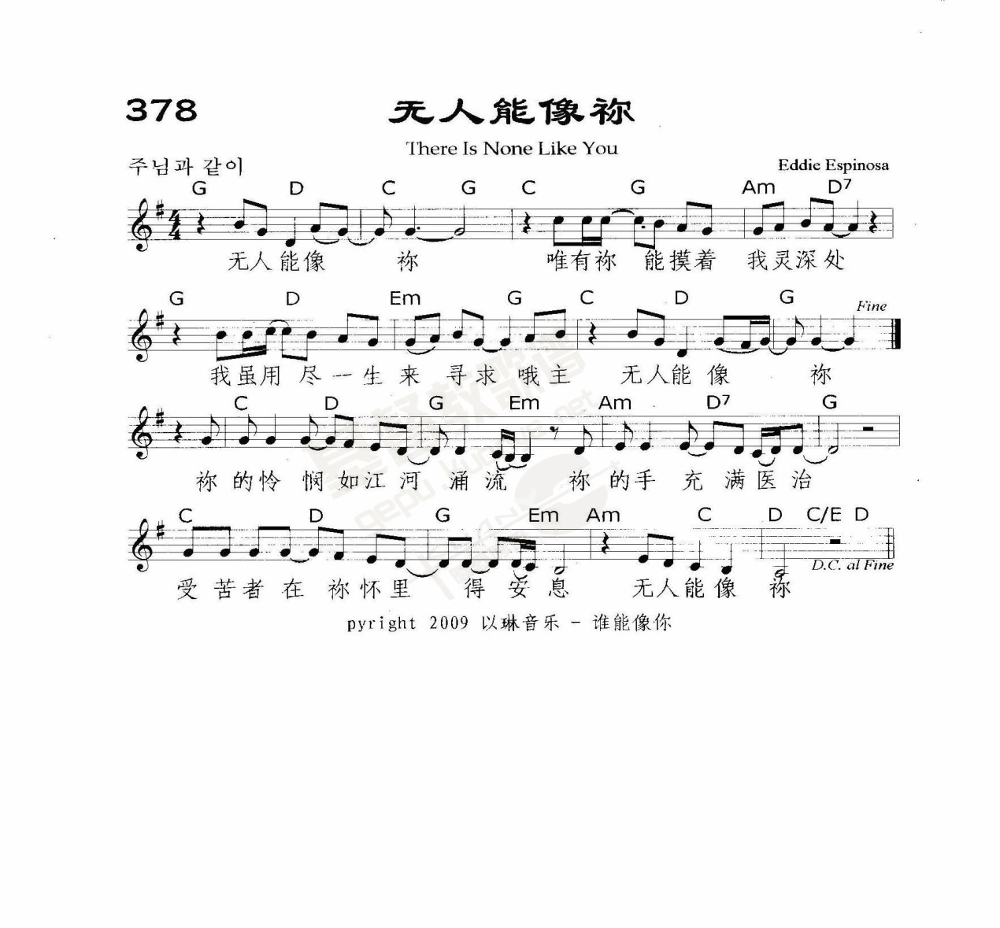
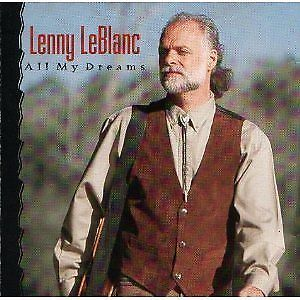

|
|
|
|
There is none like You, |
有誰能像你？ |
|

|
|
|
|
|

-
有誰能像你
伍偉基﹙粵語﹚There is none like You
-
韓國詩歌-有誰能像你(
주님과
같이 )( There is none like you )
-
There is None Like You
-
Hillsong - None But Jesus [with lyrics]
LeBlanc, Lenny
1951
蘭尼·盧布朗

https://hymnary.org/person/LeBlanc_Lenny
Lenny
LeBlanc (born June 17,
1951) is an American musician and songwriter. He started his career with Pete
Carr in 1975 and later separated ways
when both had different plans for their profession. A resident of Alabama, he is
known for the song "Falling"[1] and
has sung with many artists. Since 1987, LeBlanc works at his own studio in Muscle
Shoals, Alabama.
There Is None Like You
有誰能像你？